愛鷹山
| 日付 | 2007年5月26日（土） |
|---|---|
| 山域 | 富士山周辺 |
| メンバー | 単独 |
| 山行形態 | 日帰り |
| アクセス | 電車、バス |
| ルート (Map) | 愛鷹登山口→割石峠→越前岳→富士見台→愛鷹登山口 |
愛鷹連峰最高峰の越前岳へ行く。
富士山の裾野にある古い死火山。
8:06 御殿場駅到着。
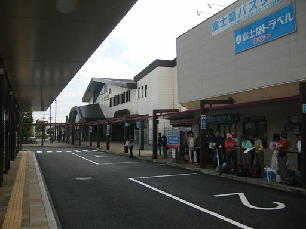
8:38 愛鷹登山口バス停到着。標高705m。
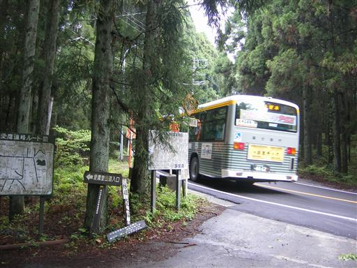
涸れた沢を渡って登って行く。
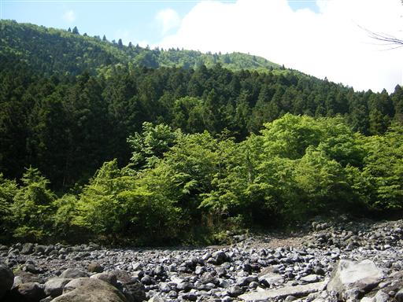
この辺りの新緑は非常に美しい。
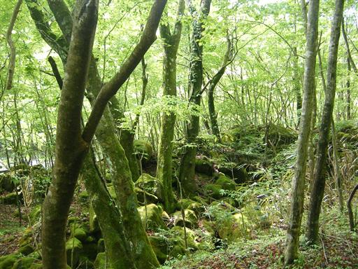
大きな杉。一つだけぽつんと大きな木が立ってる山は結構多い。
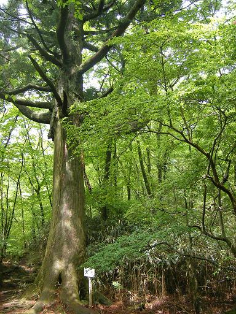
石がごろごろしている沢道を登って行く。
下流には水が無かったのに、なぜか上流では水が流れている。
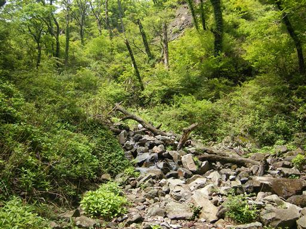
割石峠に到着。
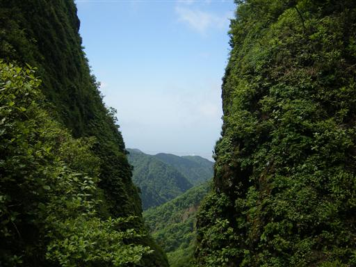
呼子岳。標高1313m。
この辺りはツツジがあちこちで赤い花を咲かせている。
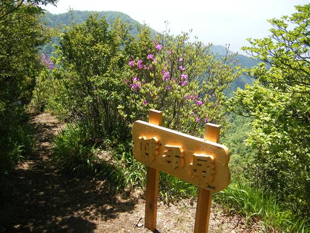
愛鷹連峰の稜線が良く見える。
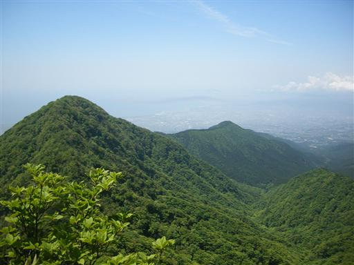
これから向かう越前岳の奥に富士山が頭を出している。
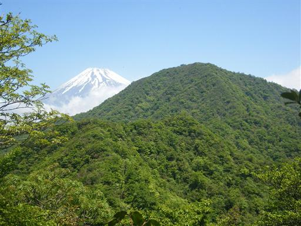
展望の良いやせた尾根を歩いて行く。
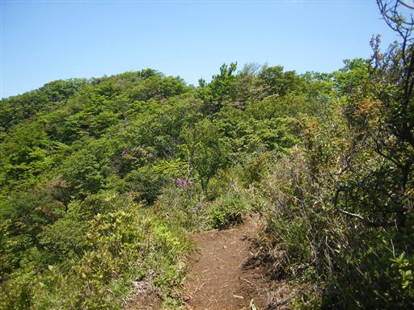
11:13 越前岳山頂到着。標高1504m。
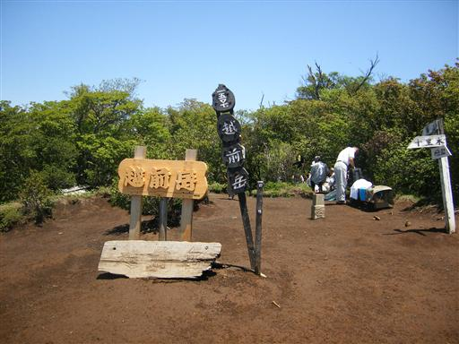
越前岳からは富士山の頭だけが見える。
この季節になると南面はだいぶ雪が解けている。

11:39 昼食をとって山頂出発。
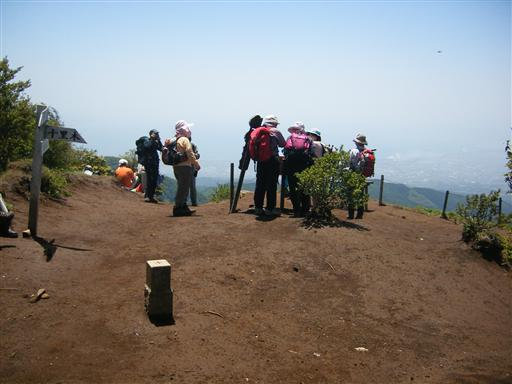
富士見台からの景色。少し雲がかかっている。

富士見台にあった梯子。
登っても大して展望は変わらない。
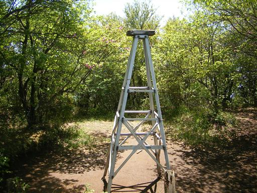
登山道入口付近にあった山神社。
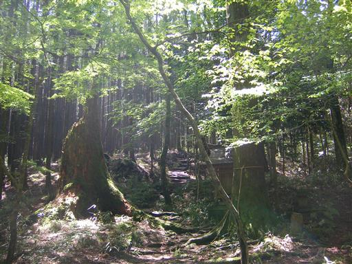
13:20 愛鷹登山口バス停到着。
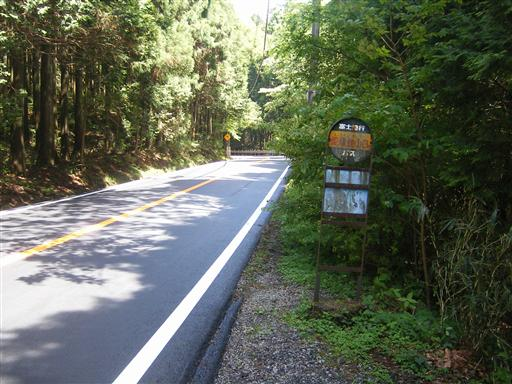
他の山行記録